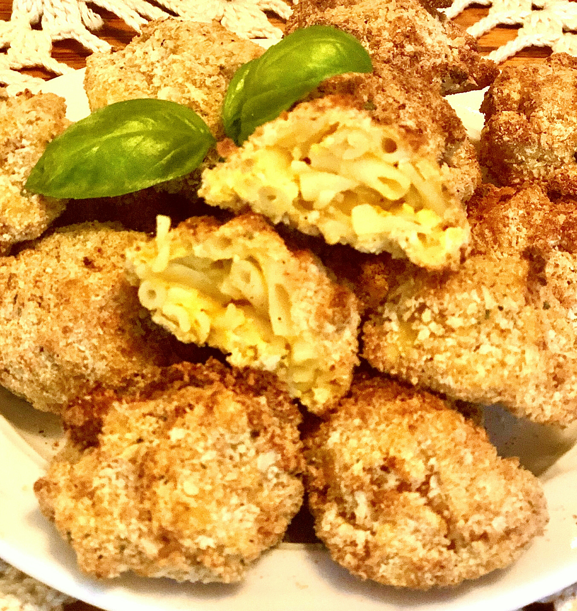

Mac and cheese balls

These little mac and cheese balls make great little appetizers or finger
food. Kids love them!
Ingredients
- 6 cups water
- 1 (7.25 ounce) package macaroni and cheese dinner mix (such as Kraft®)
- 1/4 cup milk
- 4 tablespoons margarine
- 3/4 cup shredded sharp Cheddar cheese
- nonstick cooking spray
- 1/2 cup panko bread crumbs
- 1/2 cup seasoned bread crumbs
- teaspoon salt
- teaspoon garlic powder
- 2 edds, beaten
Steps
- Pour water into a bowl and bring to a boil over high heat. Stir in macaroni
pasta from dinner package. Cook until tender, stirring occasionally, 7 to 8
minutes. Drain; do not rinse. Return to the pot and stir in included cheese
sauce, milk, and margarine. Add Cheddar cheese and stir until well combined and
cheese is melted.
- Refrigerate macaroni and cheese until firm, 2 hours to overnight.
- Scoop macaroni and cheese into 1 1/2-inch balls and place on a parchment
paper-lined cookie sheet. Freeze for 1 hour.
- Preheat an air fryer to 350 degrees F (175 degrees C) according to
manufacturer's instructions. Spray the basket with nonstick cooking spray.
- Mix panko, bread crumbs, salt, and garlic powder together in a medium bowl.
Dip each ball in beaten eggs and then in panko mixture.
- Place mac and cheese balls into the air fryer basket in a single layer,
making sure they are not touching; cook in batches if necessary.
- Cook in the preheated air fryer for 6 to 8 minutes. Turn over and fry until
golden brown, 3 to 4 minutes more.